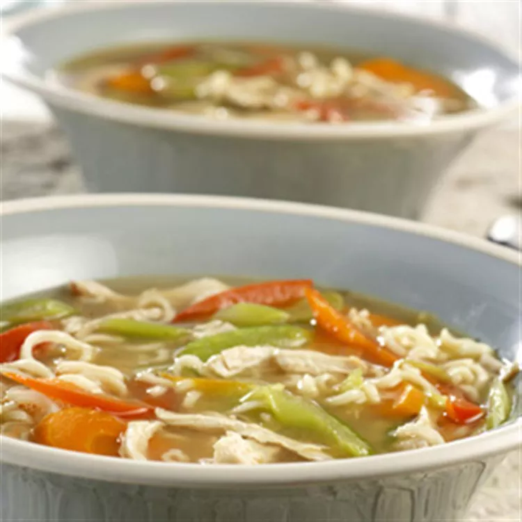

Ramen Recipe
Go Back

Best ramen in za warudo
trust me bro
ingredients:
- 1 teaspoon soy sauce
- 1 teaspoon ground ginger
- 1 dash black pepper
- 1 medium carrot, sliced diagonally
- 1 stalk celery, sliced diagonally
- 2 green onions, sliced diagonally
steps:
- Heat the broth, soy sauce, ginger, black pepper, carrot, celery, red pepper, green onions and garlic in a 2-quart saucepan over medium-high heat to a boil.
- Stir the noodles and chicken in the saucepan.
- Reduce the heat to medium and cook for 10 minutes or until the noodles are done.